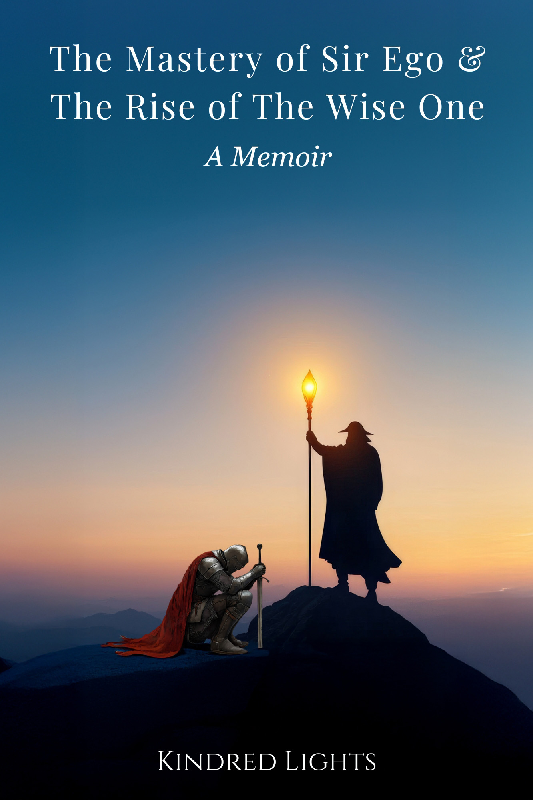
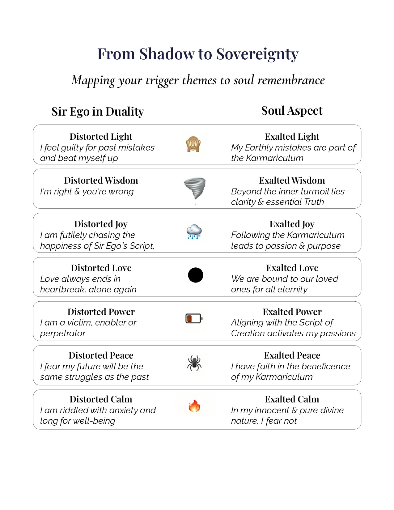
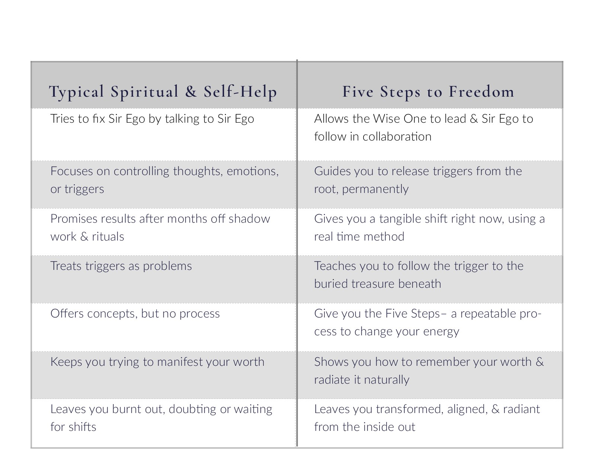
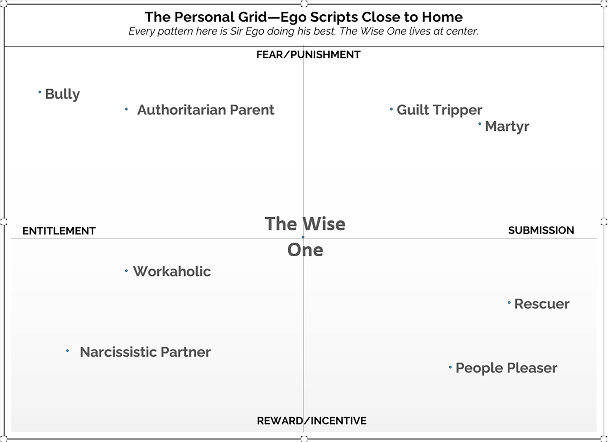

Sir Ego and the Wise One have been working together all your life. Until Sir Ego's Script collides with what's actually unfolding. And reality always wins.

This page articulates the teaching at the heart of the memoir The Mastery of Sir Ego and the Rise of the Wise One — three DUIs, a jail floor, a custody battle, a Thanksgiving table rebuilt from wreckage. The framework on this page narrated as it was actually lived.
The memoir is available now as a free PDF download while it awaits republishing.
Download the Memoir — Free PDF →Two voices live in you. You already know them both.
One of them is loud, strategic, and has been running the show for most of your life. The other is quieter, has been here the whole time, and tends to show up most clearly in the moments you weren't trying. Most of your good moments came from the two of them in partnership. Most of your hardest moments came from a collision Sir Ego rarely sees.
This room is where you meet them formally.
Your words flow. Your actions flow. You know just what is needed in the moment.
You're in a tense meeting, and out of nowhere, you have an idea — the perfect win-win, the thing nobody had seen. You can feel the room shift as consensus appears where conflict had been. You didn't plan that. It came through you.
Your heart is open in a conversation with a friend, and one significant insight slips out — the thing that shifts her whole perspective. You didn't rehearse it.
You're driving home and a solution to a long-standing problem arrives, fully formed. You weren't trying to solve anything. It just came.
This is who you truly are. The person who is on it, who knows what to do, who catches the falling child from the swing while balancing the nursing baby. Your thoughts, words, actions, heart, and intentions are aligned. You are completely present to what is — to how people are feeling, to what is needed, to the eternal now of this specific moment.
The world feels right. You feel right.
And then sometimes something fires the alarm.
An acute trigger: the impossible coworker, the health scare, the conversation that goes sideways without warning. Or a chronic one: a nervous system that has been in threat mode so long it forgot what the baseline feels like, a fuse so short that ordinary friction sets it off.
Acute or chronic, the mechanism is identical. The alarm fires. The open heart closes. The Wise One goes quiet. The loop begins.
This is the moment you blow it. Say the wrong thing. Overreact. Reach for the bottle. Whatever distraction works for you.
Before we go further, let me introduce the two characters who were present for all of it.
She has been in the room for every moment of your life you would most want to claim as yours. Every act of genuine courage. Every time the right words arrived from somewhere you couldn't explain. Every moment you showed up for someone when it cost you something, and felt, afterward, that you had done exactly what you came here to do.
That was the Wise OneYour higher self. Already home. — not a separate being advising from outside, but you, operating from your truest nature. Your higher self, in constant communion with whatever tradition, framework, or name for the divine makes sense to you. She speaks every language and answers to every name. Call her what you know her as. She's the same signal no matter what you call her.
He is the ground crew for your divine mission. The part of you attached to this body, this history, this name, this identity — the extraordinarily capable manager of your material life. The courageous and resourceful knight who braves the physical world in pursuit of noble ideals and worthy grails.
He is brave. He has stood between you and pain more times than either of you can count. He has made hard calls, carried hard things, pushed through when everything in you wanted to stop. He has wanted, his entire life, exactly what you want: to be safe, to be seen, to matter, to love and be loved in return.
We call him Sir EgoYour ego. The hero with the wrong map..
He is the partner, the doer, the executor. The hands in the bowl, while the Wise One supplies the spark. Together, most of the time, without your awareness, they produce everything good that comes through you. She brings the knowing. He brings the doing. The flow state is both of them working in concert.
Here's how every Sir Ego in the world shows up — when he's running smoothly, and when the alarm has fired. Mine has done every one of these things. Yours has too. So has the Sir Ego of everyone you know.

This chart shows the two distinct ways the two of them move through the world. Both are available in every one of us. Both are always here. The Five Steps are how you find your way from one way of being to the other, in the moments when the alarm has fired and the partnership has gone offline.
The question is what happens when the partnership breaks down. And here's the answer.
The moment Sir Ego's strategy was born can be captured in a single image from a dream I had.
I was in a terrible place — a dark, damp cave, too tight to stand in, no food, no light, nothing to sit on. Walls pressing in. Air thick with dread. Then, just as suddenly, somewhere else: another cave, but better. Some light filtering in. A small wooden table and stool. Bread and water. Survivable. Then back to the terrible place. Then the okay place. Back and forth, back and forth — for no reason I could determine, with no warning, with no apparent control over which cave or when the shift would come.
Right before waking, one desperate and crystalline thought arrived: I have to figure out the rules. I have to figure out how to behave so I stay in the okay place and avoid the terrible one. There must be a code. A pattern I can crack. A way to make this stop.
That thought is Sir Ego's strategy being born. In every soul that has ever arrived in a body and discovered that the world is not reliably safe. The specific terrible place is different for everyone — a volatile parent, an unpredictable home, a body that doesn't feel right, a playground that punishes difference. The foundational move is identical: figure out the rules. Crack the code. Deploy your unique talents to prove yourself worthy, so you stay in the okay place.
That is Sir Ego's ScriptSir Ego's rules about how life should go.. The strategy is reasonable, given the information available. The tragedy is the two fatal mistakes embedded in it. The first: Sir Ego accepted the oscillation between terrible and tolerable as the full range of what life could offer. He never imagined there was a door out of both caves entirely. The second: he invested everything in learning to stay in the okay place, which meant all his energy went into optimizing the game, and none went toward looking for the exit.
He didn't fail the Script. The Script failed him. And he has been carrying the weight of that impossibility ever since, working harder, refining more, certain that the solution is just around the next corner of effort.
No wonder he's in knots.
And here's what makes daily life what it is: every other person has a Script too. Eight billion Sir Egos, each one running a detailed Script, each one sincerely held, each one pursued with fervor — and none of them match.
Consider the simplest version. Two people in a relationship, each with a Script about what love looks like. She has learned that love means checking in, communicating, being present. He has learned that love means giving space, providing resources, showing up when called. Neither Script is wrong. Both are sincere. But when his Script meets her Script — and neither of them knows the other has a Script, because Sir Ego believes his Script is simply reality — the collision is inevitable. She feels abandoned. He feels smothered. Both sound the alarm.
Multiply this by every relationship, every family, every community, every workplace, every political system on earth. Every one is a collection of Scripts in collision, each one convinced of its own rightness, each one experiencing the others as the problem.
Sir Ego does not experience his Script as a Script. He experiences it as reality. Which means anyone who violates it is not disagreeing with him — they are defying the natural order of things.
Under the collision between Sir Ego's Script and every other Sir Ego's Script is a deeper Script at work.
Sir Ego's Script is organized around the okay place — safety, control, approval, the avoidance of the terrible cave. The Script of CreationThe living intelligence running the universe. is organized around something else entirely: your soul's growth, your Karmariculum's lessons, the stepping stones that only appear in the exact moments Sir Ego is trying hardest to prevent.
The Script of Creation is the master operating system that holds all eight billion Karmariculums simultaneously. Every soul on its own adventure, every free will decision accounted for in real time, every collision between scripts choreographed toward the highest good of everyone involved. It is a living intelligence, vast beyond comprehension, organizing an adventure of unimaginable complexity with the specific goal of bringing every soul home.
All the cosmology, biology, psychology, astrology, physics, metaphysics, chemistry — every field of knowledge, every level of reality — conspires for the highest good of all, offering you the perfect moment, every moment. And you have everything you need to meet that moment, or it wouldn't occur now.
Every trigger is that collision — Sir Ego's Script meeting the Script of Creation at the point where they are most completely opposed. And that collision — that precise, uncomfortable, familiar, maddening moment — is the entry point. The stepping stone. The invitation.
The Wise One is your direct access to the Script of Creation — your actual teacher. She knows your Karmariculum. She has your adventure's full itinerary. She has been signaling every single moment of your life, and she will keep signaling long after you close this page.
Your specific path through the Script of Creation has a name. We call it your KarmariculumYour soul's custom lesson plan. — your soul's custom curriculum. Your specific themes, soul contracts, birth circumstances, your particular adventure.
Before you incarnated, you chose this curriculum. The specific aspects of your divine nature you came here to forge. The relationships that would press on each one. The crucibles that would do the forging. The specific fires that would reveal who you actually are, from the inside.
You came to the Earth Adventure ParkThis lifetime. The rides the soul chose. to experience themes — intentionally. Perhaps you came to explore themes of peace, and your Karmariculum put you in circumstances of chaos and conflict so you could discover what peace actually is from the inside. Perhaps you came to explore themes of love, and your Karmariculum arranged for you to lose love in specific ways so you could meet the love that cannot be taken away. Every Karmariculum is custom-designed, down to the most painful detail, for the growth of the specific soul walking it.
Once you arrived here, the curriculum was set. The roller coasters. The gentle rides. The souls who would play every role, by agreement made before any of you were born.
The people who have hurt you most were in your Karmariculum. They agreed, at the soul level, to play the role that would push you to your absolute limit — because your soul knew that was what was required. When you see your life through this lens — not as what happened to you, but as what you arranged to forge what you came here to become — the shame dissolves. The victim story dissolves. What remains is something much more interesting: the story of a brave soul on a remarkable quest.
Your Karmariculum is a lovingly chosen adventure, designed for the highest good of every soul involved. Your Wise One is walking every step of it with you.
None of this requires you to believe any of it. The Script of Creation, the Karmariculum, the soul choosing its adventure — these are the maps I found that made sense of my own experience. They may resonate immediately. They may feel like too much right now. The practice works either way. It works on the nervous system. It works on the moment between the trigger and the response. It works whether you call what guides you God, the universe, your higher self, your better judgment, or simply the part of you that knows.
The Wise One knows everything you have been through, are going through, and will go through. She knows how to get through it, and she will walk each step with you — delivering peace, insights, creative solutions, and right action in every circumstance.
Her only requirement is an open heart.
You can't hear her whispers of inspiration and intuition when your heart is closed in fear, anger, hate, negativity, guilt, shame, resentment, despair. These are energetic blockages. They cover her voice. In the next door — Unlocking the Power of Emotions — you'll see what these blockages are, what they're holding in place, and how to let them move. For now: they do not tell the truth about who you are, about what has happened, or about why you are here.
The offer is always on the table. The signal has always been available. The question is what happens between the signal and you.
Here's what Sir Ego hasn't been able to see on his own.
Because Sir Ego is the one who reads the books, goes to the workshops, studies the frameworks, and works on himself — he's been bringing every tool that's ever been offered to his own healing. Meditation. Shadow work. Better boundaries. Cognitive behavioral therapy. Parts work. Affirmations. Journaling. He's tried them. Many of them help with something. And something keeps coming back anyway.
The issue isn't Sir Ego. Sir Ego is doing exactly what he's built to do. The issue is that these methods — almost all of them — operate inside his Script and ignore his Karmariculum. They give him tools to feel better about his life, manage his reactions more skillfully, be a more evolved version of himself. What they don't do is dissolve the Script's grip on his next trigger. And what they don't recognize is that the triggers themselves are the Karmariculum delivering the exact lessons his soul chose.
So every new practice gets added to the Script as one more rule he's supposed to meet.

Meditate daily. Don't get angry. Journal when you feel like punching a wall. Pray for that person who hurt you. Do your shadow work. Set better boundaries. Be more self-compassionate. Be more mindful.
The list gets longer. The Script gets longer. The exhaustion you've been feeling — the sense that you're doing more and more spiritual work and somehow feeling more tired and more behind — comes from exactly this. The Script stayed intact. It got more elaborate. And your Karmariculum kept delivering the same lessons in different costumes, because they still needed to be learned.
The Five Steps are different at the root. They don't add to the Script — they go underneath it. They don't manage the trigger — they recognize the trigger as the Karmariculum's next invitation, and walk through it with the Wise One leading. The Wise One has access to the Script of Creation. Sir Ego has access to the Wise One — through an open heart. The steps are how.
The Script shows up in the roles you know by heart. Look through this one and see if anything feels familiar.

Every ego is off center. That's not the problem. Being in a body, in a specific life, with a specific Script written young — Sir Ego is going to land somewhere on this grid. So is everyone else.
The problem is that everyone is off center in a different direction. The Authoritarian Parent is on the opposite end of the same axis as the Permissive Parent, each sincerely running their own Script, each certain they're right. The Martyr and the Entitled Child, the Workaholic and the Codependent — all pairs of opposites, each one convinced the other is the reason things aren't working.
This is what every family argument is. Every workplace conflict. Every political division. Every war. Two or more Sir Egos, each off center in a different direction, each interpreting the others' directions as wrong, none of them close to the actual center. Their Scripts collide. The Script of Creation keeps delivering lessons none of them are equipped to read.
And right there, at the center — outside all of them — the Wise One. Not a better point on the axis. A different dimension entirely. The Tao. The Y-axis. The place where the aspect is no longer practiced but lived. The only position with access to the actual highest good of all, because the only position plugged into the Script of Creation.
You probably recognize yourself in more than one costume on this grid. That's exactly where the Recognition the Five Steps open with begins.
Everything in this room is lived. The dream of the two caves. The Scripts in collision. The moment Sir Ego knelt — not in defeat, but in devotion. The cause worthy of his service. The Wise One's torch, steady through all of it.
This book is the walk, not the framework. How it actually happened. Three DUIs. A malignant narcissist. The children I almost lost. The diagnosis. The Thanksgiving table that shouldn't have been possible. The long, grateful rise of the Wise One into the seat that was always hers.
Offered as a free draft, while it's still being finished. Take it with you.